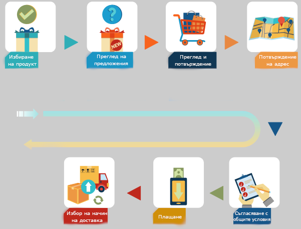
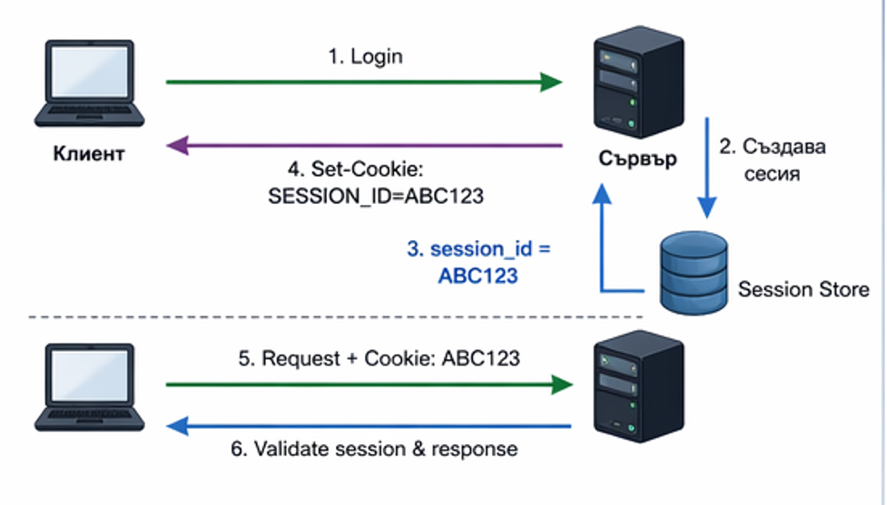
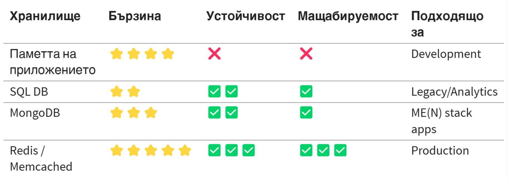
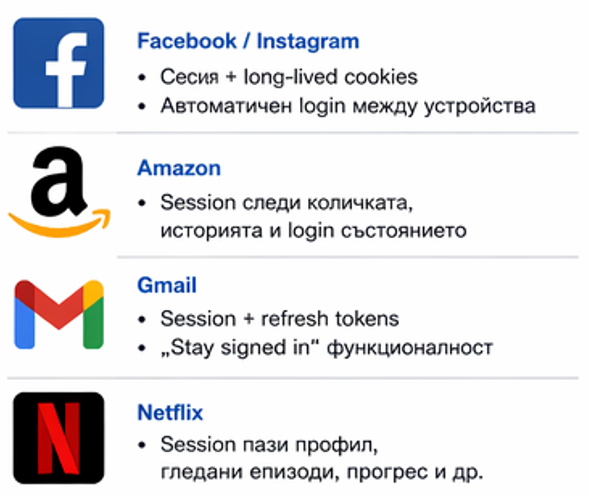
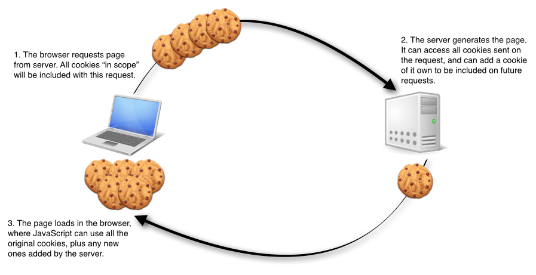
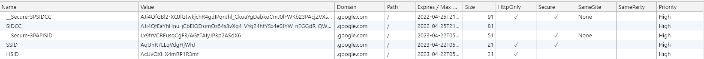
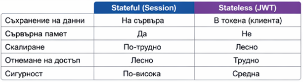

Сесии

HTTP протокол
- Stateless протокол.
- Заявките са независими помежду си.
- Не могат да се проследяват свързани заявки.
- Как се идентифицират потребителите?
Сесия
- Поредица от непрекъснати действия на потребител на дадено уеб приложение в рамките на определен период от време.
- Данните се съхраняват под формата на наредени двойки ключ - стойност.


Къде се съхраняват сесиите?

- в бисквитки в браузъра на потребителя
- в localStorage
- в sessionStorage
Каква е продължителността на сесиите?
Сесиите не живеят вечно.
- потребителят затваря уеб сайта
- потребителят излиза от профила
- след определено време на неактивност
- след предварително дефинирано време
Как да създадем сесия?
function login(request):
user = db.findUser(request.username)
if user.password == hash(request.password):
sessionId = generateRandomId()
sessionStore.save(sessionId, {
userId: user.id,
createdAt: now()
})
response.setCookie("SESSION_ID", sessionId)
return "Login success"
else:
return "Invalid credentials"
Как да извличаме данни от сесия?
function authMiddleware(request):
sessionId = request.cookies["SESSION_ID"]
session = sessionStore.get(sessionId)
if session == null:
return 401 Unauthorized
request.user = db.getUser(session.userId)
next()
Как да нулираме сесия?
if now() - session.createdAt > 30min:
delete session
Примери от реалния свят

Бисквитки
Mалка част от данни, която се съхранява в браузъра на потребителя.
Наредена двойка име - стойност.
Имат определен живот.


Бисквитките на практика
document.cookie="name=value; path=/;"
document.cookie
Stateful vs Stateless системи

🧑💻 User → Login → 🖥️ Server
⬇️
Issued:
- accessToken (15m)
- refreshToken (7d)
- accessToken (15m)
- refreshToken (7d)
🧑💻 User → Request with accessToken
🖥️ Server → Check JWT → Check Blacklist → ✅ Proceed
🧑💻 User → Logout
🖥️ Server → Add tokens to Blacklist
🧑💻 User → Request with blacklisted token
🖥️ Server → ❌ Reject
Упълномощаване и Удостоверяване
Упълномощаване (authorization) - процес на предоставяне на възможност на някого за достъп до даден ресурс.
Удостоверяване (authentication) - идентифициране на потребител.
Пароли
Никога не трябва паролите да се съхраняват в чист вид, както в модела на данните, така и в самата база данни.
Хеширащи функции
На даден низ съпоставят друг низ с фиксиран размер.
Хеширащите функции имат две важни свойства:
- Функцията е необратима.
- Функцията е детерминистична.